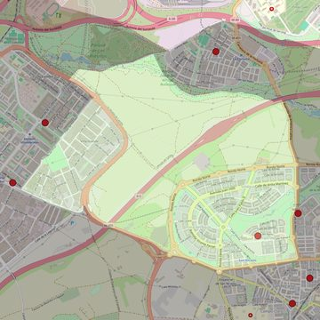

Santa Teresa del Niño Jesús
- Arciprestazgo
- Leganés
- Población
- Leganés
- Dirección postal
- c/ Violeta Parra, s/n
- Código postal
- 28918
- Extensión
- 5,49 km² (549 ha)
- Teléfono
- 916 941 122
- Correo electrónico
- santateresa.leganes@gmail.com
- Información demográfica
- De la parroquia · De la población (Leganés) · Del arciprestazgo (Leganés)


Descargar mapaLímites según decreto
“Partiendo de la confluencia de la carretera de Leganés a La Fortuna (M-411) con la Avenida del Mediterráneo, arrancan por el eje de la carretera de Leganés a La Fortuna hasta el Arroyo de Butarque (en dirección noroeste); continúan por el eje del Arroyo de Butarque hasta el límite del término municipal de Alcorcón (en dirección noroeste), por los límites de los términos municipales de Alcorcón y Leganés (en dirección suroeste), por el eje de la autovía Alcorcón-Leganés (M-406; en dirección sureste) y por el eje de la Avenida del Mediterráneo (en dirección este) hasta la confluencia con la carretera de Leganés a La Fortuna, punto de partida” (Decreto de erección de 25-5-2000; Boletín Oficial, Junio-2000, pág. 541-542)